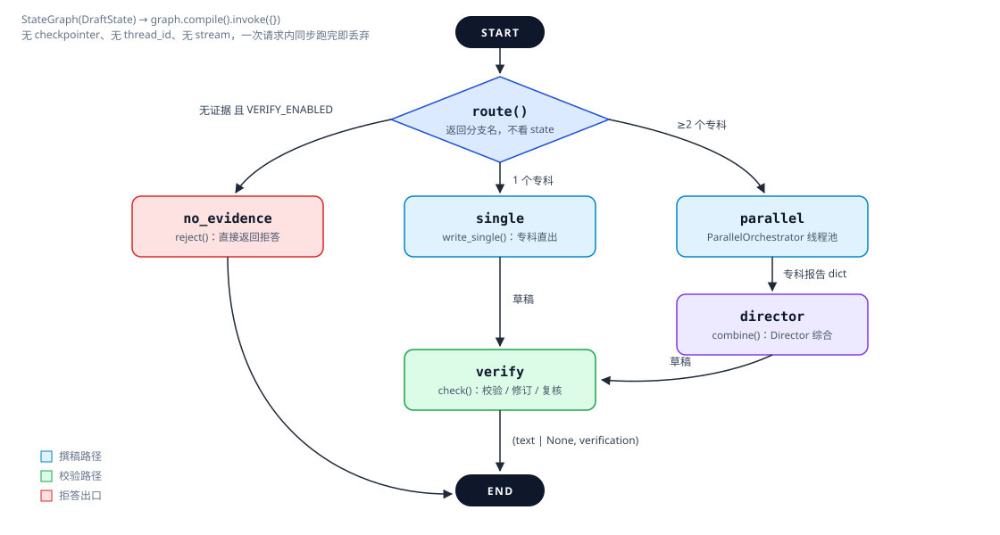
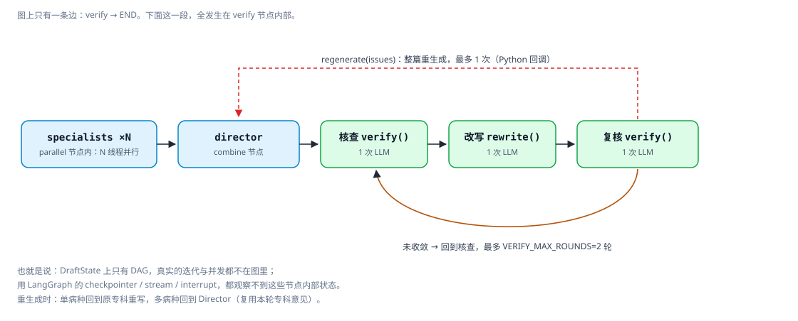
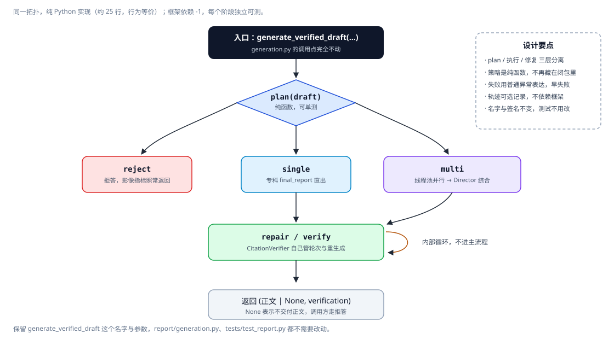

结论：全项目只有一处用到 LangGraph，它被用来描述一个「五个节点、三条分支、没有环」的顺序流程； 真正需要框架的循环、并发、持久化、流式进度，一项都没用上。建议把编排退化成同签名的普通函数，把图的能力留到真正需要它的那天。
先看结论，再看证据。
节点：no_evidence / single / parallel / director / verify；1 条条件边、5 条普通边。
每个请求都 compile().invoke({}) 一次，跑完即丢。
路由读的是闭包变量而不是 state；并发是节点内部自己开的线程池；
唯一的循环藏在 Verifier 的 for 循环里，图上看不见。换成 if/else 行为等价。
保留 generate_verified_draft 的名字与签名，内部改成 plan / 执行 / 修复三段；
等出现 checkpoint 续跑、人工复核、逐节点进度时再引入图。
唯一的 import、唯一的调用点，全部证据可核对。
| 位置 | 内容 | 说明 |
|---|---|---|
requirements.txt:26 | langgraph==1.0.10 | 全项目唯一的 LangGraph 依赖声明；连带 langchain-core 1.7.2、langgraph-sdk、langgraph-checkpoint、xxhash。 |
report/drafting.py:6 | from langgraph.graph import END, START, StateGraph | 唯一 import LangGraph 的业务文件（graphrag/builder.py 里的 add_node 是 networkx，与 LangGraph 无关）。 |
report/drafting.py:70-82 | 构图 + 编译 + 执行 | StateGraph(DraftState) → 5 个 add_node → 1 条 add_conditional_edges(START, route) → 5 条 add_edge → compile().invoke({}) → 取 ["result"]。 |
report/generation.py:103 | generate_verified_draft(...) | 在 MedicalReportGenerator.generate() 里同步调用；外层由 report/service.py:51 的 run_in_threadpool 承载。 |
report/drafting.py:17-20 | DraftState | 三个字段：specialist_reports、draft、result，total=False，只用于节点间传值。 |
| 节点 | 函数 | 行为 |
|---|---|---|
| no_evidence | reject() | 返回 (None, CitationVerifier.no_evidence_result())，一个模型都不调。 |
| single | write_single() | 一个专科 final_report=True 直出正文。 |
| parallel | ParallelOrchestrator().run() | 内部 ThreadPoolExecutor 并行跑 N 个专科，返回 dict[name, report]；非 parallel 模式在此抛 NotImplementedError。 |
| director | synthesize() → DirectorAgent.execute() | 把专科报告合成一份正文。 |
| verify | verify() → CitationVerifier.execute() | 核查引用 → 有限轮改写 → 复核，必要时请求一次整篇重生成；返回正文或 None。 |
checkpointer、没有 thread_id、没有 interrupt：图不保存任何中间状态。invoke 而不是 stream：节点级进度对前端不可见，页面只能等整个请求返回。invoke({}) 传入的是空 state，路由靠闭包里的 specialists 与 config.VERIFY_ENABLED 判断。route 只比较 len(specialists) == 1；
病种到专家的映射发生在图之前的 generation.py:84-98（dict 查表）。按代码逐节点、逐边还原；颜色只区分路径性质，不代表执行先后。

这些控制流真实存在，但都发生在节点内部，LangGraph 看不见。

CitationVerifier.verify_and_rewrite() 里
for round_no in range(max_rounds) 才是真正的迭代；图上 verify → END
是一条直线。也就是说：图描述的控制流与真实控制流不一致。check() 传入的 regenerate 是
partial(synthesize, specialist_reports) 或 write_single；
Verifier 在内部直接把它调回来。在图上这不能画成边（会成环），在代码里它却是普通函数调用。parallel 节点里自己
ThreadPoolExecutor(max_workers=len(agents))；LangGraph 的 fan-out / Send
/ reducer 合并一概没用上。所以图既没有带来并行调度，也没有带来合并语义。route(_) 的参数被丢弃，判断依据是
config.VERIFY_ENABLED and not evidence 与 len(specialists)。
这等于「图的状态驱动」退化成了普通闭包捕获 —— 而 route 因为定义在函数内部，也没法单独做单测。把「LangGraph 能给的」和「这里真正用到的」并排看。
| LangGraph 的能力 | 本项目 | 判断 |
|---|---|---|
| 多节点有环的状态机 | 未使用 | 图是无环 DAG；唯一的环在节点内部用 for 循环实现。 |
| checkpoint / 断点续跑 | 未使用 | 无 checkpointer，失败即整单失败；报告是同步请求，没有续跑需求。 |
| interrupt / 人工介入 | 未使用 | 没有人工确认环节；校验后的拒答由 Verifier 自动决定。 |
| stream 事件 / 节点进度 | 未使用 | 调 invoke；AGENTS.md 明确「当前没有消息流式返回」。 |
| Send / 动态并行扇出 + reducer | 未使用 | 扇出发生在节点内部线程池里，图只看到一次 parallel 调用。 |
| 节点级重试策略 / 超时 | 未使用 | 专科失败直接抛异常；重试与超时在 llm/client.py 里做。 |
| 可视化 / 调试单步 | 部分 | get_graph().draw_mermaid() 可以出图，但出的图恰好少了上面那个环。 |
| 项 | 实测 / 事实 |
|---|---|
| 依赖树 | langgraph 1.0.10 连带 langchain-core 1.7.2、langgraph-sdk、langgraph-checkpoint、langgraph-prebuilt、xxhash，site-packages 约 5.7 MB。 |
| 导入耗时 | 本机 import langgraph.graph 在 pydantic 之后额外约 3.3 s（冷启动首测 5.5 s）。 |
| 代码占比 | drafting.py 共 83 行，其中图定义约 13 行；被它包裹的业务调用其实只有 4 个方法。 |
| 认知成本 | 读者要同时理解两套控制流：图上的 DAG，和 Verifier 内部的循环 + 回调反向边。 |
docs/SPEC-Ophthalmology-Copilot.md:340 把 LangGraph 列为 Multi-Agent 编排首选，图是当初的方案落地。generation.py:84 的 dict 查表，后者是 service.py:161 的一道状态门控。它们恰恰说明这些需求用普通代码就够了。保持对外契约不变，把编排还原成「可读的三层」。以下只是方案，未改动仓库里的任何代码。

| 层 | 放什么 | 要点 |
|---|---|---|
| plan | reject | single | multi 的判断 | 做成 (specialists, evidence, verify_enabled) → kind 的纯函数，可单测，不再藏在图的条件边里。 |
| 执行 | SpecialistAgent / ParallelOrchestrator / DirectorAgent | 完全沿用现有类，不改行为；MULTI_AGENT_MODE 的校验提到入口，早失败而不是跑到一半抛 NotImplementedError。 |
| 修复 | CitationVerifier | 轮次、改写、重生成本来就由它管，不要再套一层「图」重复表达循环。 |
# 签名不变：report/generation.py 的调用点、tests/test_report.py 都不用动 def generate_verified_draft(specialists, director, contexts, case_context, evidence_by_role, evidence, verify) -> VerifiedDraft: if config.MULTI_AGENT_MODE != "parallel": raise NotImplementedError(config.MULTI_AGENT_MODE) # 早失败 numbers = {item["id"]: item["index"] for item in evidence} if config.VERIFY_ENABLED and not evidence: return None, CitationVerifier.no_evidence_result() if len(specialists) == 1: # 单专科：直出 + 原专科重写 agent = specialists[0] draft = agent.execute(contexts[agent.name], evidence_by_role[agent.name], numbers, final_report=True) regenerate = lambda issues: agent.execute( contexts[agent.name], evidence_by_role[agent.name], numbers, final_report=True, issues=issues) else: # 多专科：并行 + Director 综合 reports = ParallelOrchestrator().run(specialists, contexts, evidence_by_role, numbers) draft = director.execute(reports, evidence, context=case_context, evidence_by_role=evidence_by_role) regenerate = lambda issues: director.execute( reports, evidence, issues, context=case_context, evidence_by_role=evidence_by_role) return verify(draft, evidence, regenerate)
plan 抽成模块级函数并补一条单测（覆盖 reject / single / multi 三种出口）。tests/test_report.py：现有用例覆盖了单病种、多病种、无证据、拒答、校验重生成，行为应完全一致。langchain / langgraph import 后，从 requirements.txt 移除并清理环境。route 现在是函数内的闭包，无法单测；提出来即可测。
② MULTI_AGENT_MODE 的 NotImplementedError 目前埋在 parallel 分支里，
只有多病种才会炸；提到入口可按配置立刻报错。
不需要框架：在每个阶段 append 一条 step{name, elapsed, status} 到
verification 记录里，就能往前端和 PDF 展示真实执行轨迹 ——
这比 draw_mermaid() 更接近事实，因为它能记录 Verifier 内部那两轮改写。
先纠正一处：按病种选专家、发布前人工复核，项目里已经做到了。要看的是这两件事的形态，而不是它们的存在。
| 需求 | 现在怎么做 | 为什么不需要图 |
|---|---|---|
| 按所选病种选专家 | generation.py:84-98：遍历 analysis.diseases，用 DISEASE_ROLES[disease] 查表建 SpecialistAgent，只跑选中的病种。 |
这是一次 dict 查表 + 列表构造。图反而看不见它：route 只判断 len(specialists)，三个分支出口里没有任何一处表达「选了哪个病种」。选专家的逻辑在图之外，并且工作得很好。 |
| 发布前人工复核 | 正文进会话后，页面展示正文 + 引用校验条 + 影像指标；只有 status ∈ {pass, rewritten} 才出现「下载 PDF」按钮（ChatView.jsx:111），后端导出同样硬门控（service.py:161-165）。 |
复核发生在流程结束之后：请求已经返回、正文已经落库，人看的是成品。这里没有「未完成的中间状态」需要保存和恢复，所以 checkpoint / interrupt 无用武之地；一道状态判断就够了。 |
interrupt 解决的是「流程跑到一半停下来等人，然后带着中间状态继续跑」。
现在的复核是「跑完了，人看过再决定发不发」—— 前者叫暂停与恢复，后者叫交付与签核。后者用普通代码更简单，也更容易做权限与留痕。
| 触发信号 | 为什么那时图才划算 |
|---|---|
| 复核要插进流程中间：例如专科出稿后先让医生改/确认，再交给 Director 综合 | 需要在节点边界暂停，保存当时的 specialist_reports，等人提交后再从这一点恢复。interrupt() + checkpointer 正是为此设计的；自己实现等于写一套小型状态机与持久化。 |
| 报告生成变成异步长任务，中途失败要续跑 | 一条报告有 10+ 次模型调用，现在失败即整单重来。用 checkpointer + thread_id（可直接复用现有 SQLite）只补失败的分支。 |
| 前端要逐节点进度（正在检索 / 正在专科 / 正在校验） | 现在只有 invoke + run_in_threadpool，页面只有一句「正在分析影像、生成报告并校验引用…」。graph.stream() 天然给节点事件。 |
| 专科拓扑由 VLM 检出结果动态扩展，且角色间存在依赖 | 现在按用户勾选病种做查表，最多 3 个固定角色、彼此独立，所以线程池就够。若改成「检出什么就跑什么、还要按依赖排序（如 DR 合并 DME）」，Send 扇出 + reducer 才真正省事。 |
现在导出只校验机器状态，人的签核没有留痕。若要变成产品里的硬流程，普通代码三步就够：
reviewer_id / reviewed_at / decision（approve / reject / edit）。status 再校验 decision == approve。regenerate 通道（多病种走 DirectorAgent.execute(avoid=issues)）重写一版 —— 这是一次新请求，不是断点恢复。verify → rewrite → verify 的条件边，
循环上限放进 DraftState（rounds），而不是留在 Python 的 for 循环里。Send 扇出专科、用 reducer 合并 specialist_reports，
节点内部不再自带线程池。compile() 配 SqliteSaver，thread_id 用 job id，
这样「跑到一半崩了」才有意义。这三件事都不难，但它们会把 drafting.py 从 83 行推到 200 行以上 —— 值不值得，取决于上表四条里是否已经有项目命中的项。 按现在的实现，前四条一条都没有：选专家是查表，复核在流程之外，进度只到「整单进行中」，专科拓扑固定为三个角色。
所有判断都能在下列位置核对。
| 文件 | 要点 |
|---|---|
backend/report/drafting.py | 图定义（70-82）、route（34-37）、各节点（39-68）、DraftState（17-20）。 |
backend/agents/verifier.py:174-222 | 真实循环：for round_no in range(max_rounds)、regenerate 回调、复核与拒答。 |
backend/agents/parallel.py:24-25 | 节点内部的 ThreadPoolExecutor，与 LangGraph 的并行无关。 |
backend/agents/specialist.py:60-86 | 专科自己的工具循环（最多 3 步），同样是节点内部的循环。 |
backend/report/generation.py:103-107 | 唯一调用点；返回 (summary, verification)。病种 → 专家映射在同文件 84-98 行。 |
backend/report/service.py:161-165 | 导出 PDF 前只校验机器状态（pass / rewritten），人工复核没有留痕。 |
frontend/src/components/ChatView.jsx:111 | 「下载 PDF」按钮的出现条件与后端同一套状态判断。 |
backend/utils/config.py:86-91,123 | VERIFY_ENABLED / VERIFY_MAX_ROUNDS / MULTI_AGENT_MODE，route 与节点行为实际依赖它们。 |
docs/SPEC-Ophthalmology-Copilot.md:340 | 当初选型 LangGraph 的理由（历史方案，非现状）。 |